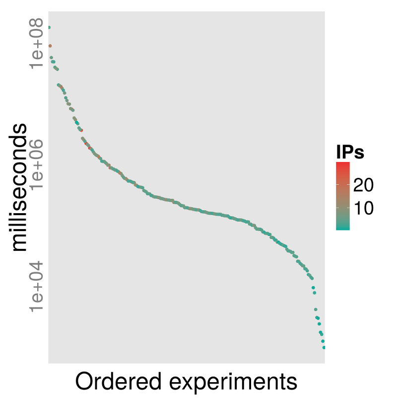
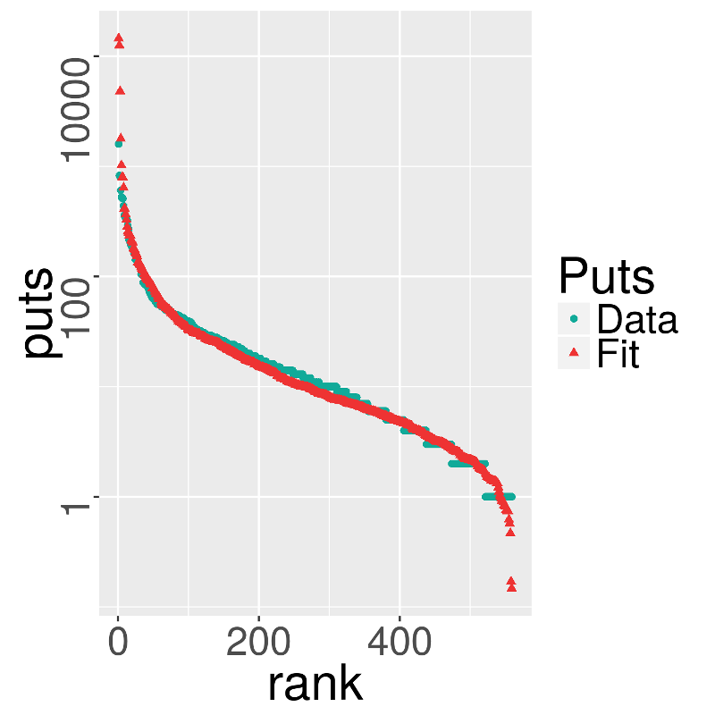
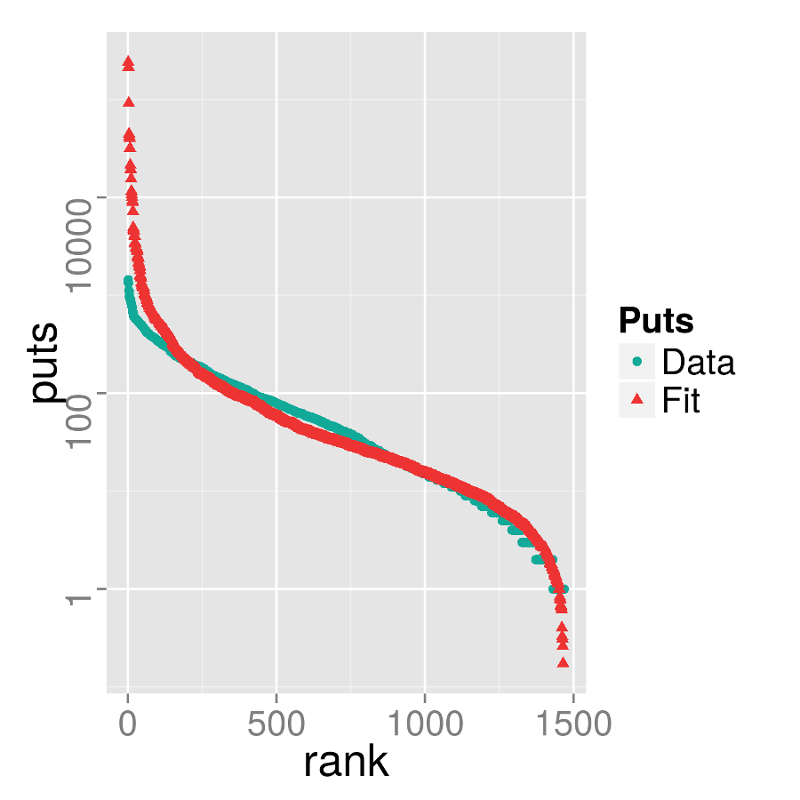

Performance for the masses
Experiments with A Web
Based Architecture to Harness Volunteer Resources for
Low Cost Distributed Evolutionary Computation
Merelo, Castillo, García-Sánchez, de las Cuevas,
Rico, García-Valdez
Looking for a free high-performance infraestructure for evolutionary algorithms
It's a techno-social system
Security achieved through trust
Open source + open data
Open Science
But there are some challenges
Can we model the user behavior?
What's the relationship to the social network
Can we obtain better values than a local computer?
Initial experiments. Regular Ajax requests
Zipf at work here too


Fits to a Generalized Extreme Values distribution
Working harder using web workers
It's GEV all over again

Keep volunteers engaged
Thanks
Follow us at @jjmerelo+ @geneura